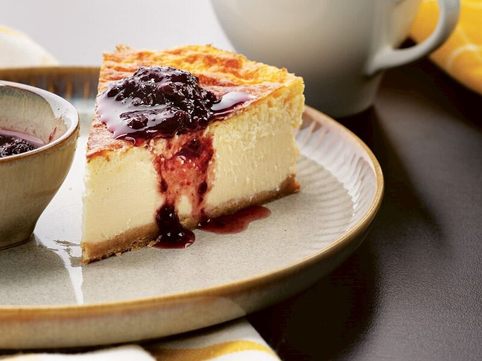

San Sebastian Cheesecake
Ana malzemeleri peynir, şeker ve yumurta olan cheesecake, oldukça popüler bir tatlıdır. Yapımında labne ve krem peynir kullanıldığı için, 'peynirli kek' olarak da adlandırılır. Hafif bir tatlı olduğu için, çay ve kahvenin en lezzetli eşlikçisidir. Cheesecake kendi içinde farklı çeşitlere ayrılır. Bunlardan biri de San Sebastian'dır. İspanya mutfağından dünyaya yayılan san sebastian keki, ismini Bask Bölgesi'nde bulunan kentten almıştır. Malzemeleri hazırladıysanız, ustasından san sebastian cheesecake tarifine geçebiliriz.

Kaç Kişilik: 6 Kişilik
Hazırlanma Süresi: 30 dakika
Pişirme Süresi: 22 dakika
San Sebastian Cheesecake Tarifi İçin Malzemeler:
- 1,5 su bardağı labne peyniri
- 2,5 su bardağı krem peynir
- 2 su bardağı krema
- 1 su bardağı toz şeker
- 6 adet yumurta
Tabanı İçin;
- 2 paket sade bisküvi
- 1 yemek kaşığı tereyağı
- 1 adet yağlı kağıt
Ustasından San Sebastian Cheesecake Nasıl Yapılır?
- Labne, krem peynir, krema, şeker ve yumurtaları bir kapta iyice karıştırın. Tüm bisküvileri ezerek eritilmiş tereyağı ile birlikte homojen bir kıvam alana kadar yoğurun.
- Yağlı kağıt serdiğiniz kelepçeli kek kalıbına bisküvileri döşeyin ve üzerine hazırladığınız karışımı yayın.
- Kekinizi önceden ısıtılmış 170 derece fırında 22 dakika pişirin.
- Fırından çıkardığınız kekinizi 1 saat süreyle oda sıcaklığında dinlendirin ve sonrasında bir gün süreyle buzdolabında bekletin. Daha sonra dilimleyerek servis yapın.
San Sebastian Cheesecake Tarifinin Püf Noktaları Nelerdir?
- Kullanacağınız labne peynirin suyu mutlaka süzülmüş olsun. Krem peynir yerine, sürülebilir beyaz peynir de kullanabilirsiniz.
- Cheesecake'e aroma katmak için, içerisine rendelenmiş portakal veya limon kabuğu ilave edebilirsiniz.
- Tarife başlarken, tüm malzemelerin oda sıcaklığında olmasına özen gösterin.
1 Porsiyon San Sebastian Cheesecake Kaç Kalori?
- San sebastian cheesecake'in bütün hali, yaklaşık 500 kaloridir. Orta boyutlarda kesilmiş bir dilimi ise 150 kaloridir.
AFİYET OLSUN